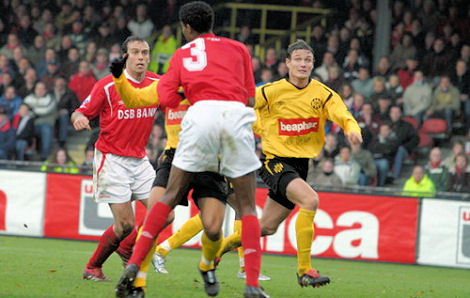

|
|||||
AZ: Geblesseerd: Steinsson, Didulica,
Sinouh Geschorst:
Tegenstander AZ presteerde eveneens matig door tegen FC Twente met 3-0 te verliezen. Zowel Roda als AZ hebben op de laatste dag van het jaar de ultieme kans om 2006 een goede afsluiting te geven. De
geschorste Kah zal daar niet aan kunnen bijdragen waardoor Senden de kans krijgt
zijn wondergoal van enkele seizoenen geleden nog eens over te doen. Roda kan ook
deze wedstrijd nog geen beroep doen op de van een commotio cerebri herstellende
Vandamme. De personele zorgen bij Stevens' collega Van Gaal zijn groter. De
trainer van AZ kampt met vele blessures waarvan Arveladze de meest actuele is.
De Georgiër viel halverwege de ontmoeting met FC Twente uit met een
kuitblessure. Naast de aanvaller is ook de inzetbaarheid van Barry Opdam (lies),
Danny Koevermans (kuit), Joey Gudjonsson (ziek), Stijn Schaars en Demy de Zeeuw
(beiden vermoeidheidsklachten) twijfelachtig. Steinsson, Didulica en Sinouh zijn
al langer uit de running terwijl Cziommer met een enkelblessure kampt.
 In het nieuwe stadion van AZ zal Agustien al een blik kunnen werpen op zijn nieuwe omgeving. Of dat de reservebank of de grasmat wordt hangt in belangrijke mate af van in hoeverre de speler over zichzelf durft uit te stijgen. Voor Cziommer is de ontmoeting met Roda er een met zijn vorige werkgever. Ook Waterreus, de voor een halfjaar gecontracteerde derde keeper, heeft een Roda-verleden. Het stadion is uitverkocht. Als Roda iets wil bereiken tegen de nummer drie van Nederland dan zal er flink gas gegeven moeten worden. Met het jammerlijke tekort aan voetbalintellect is er immers in Alkmaar geen eer te behalen. Vermoedelijke opstelling Roda JC: Reismogelijkheden >>> Vorige wedstrijd
Verwachte uitslag: 3-0
|
|
||||